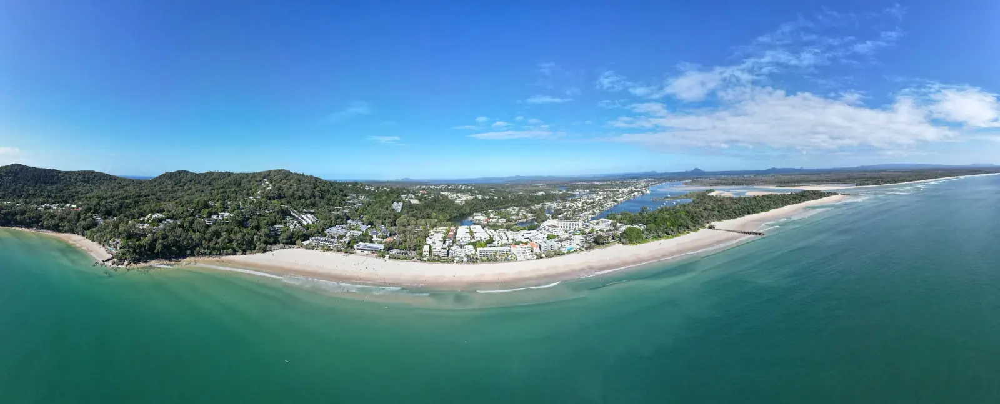

Noosa — Main Beach
Queensland, Australie · surf

Une plage de la Sunshine Coast, à proximité de Noosa Heads. Une étape de surf dans un cadre de baie.
- Lieu
- Queensland, Australie
- Niveau
- Variable selon les conditions
- Activités
- surf
- Type d'eau
- Mer / océan
- Coordonnées
- -26.39, 153.09 (position approximative du secteur)
Ouvrir dans Ocean Buddy Télécharger sur l'App Store
Source : Tourism Australia.